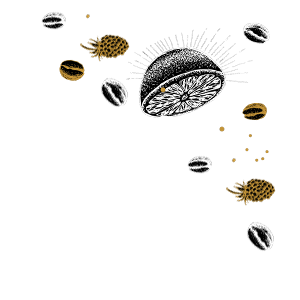
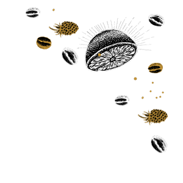

Перед тим як захопити світ, захопи каву
Good Cofee

Перед тим як захопити світ, захопи каву
Good Cofee



|
Назва | Вихід(мл) | Ціна(грн) |
|---|---|---|---|
| Кава з прянощами (кардамон, корицею, цедрою итрусових) | 120/40/10 | 49,00 | |
| Кава по-мексиканськи (з мускатним горіхом, корицею) | 120/40/10 | 49,00 | |
| Кава по-новозеландському (з цукром) | 120/40/10 | 43,00 | |
| Кава по-румунськи (з какао і ваніллю) | 120/40/10 | 43,00 | |
| Кава з кардамоном | 120/40/10 | 43,00 |

Є речі, які варті того, щоб їм зберігали вірність.